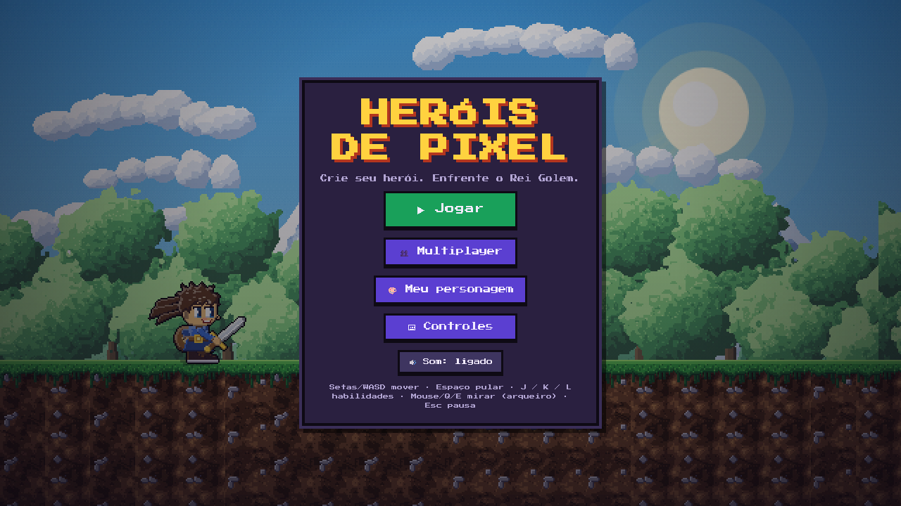

Jogo · 2026
Heróis de Pixel
Jogo de plataforma 2D em pixel art feito do zero com vibe coding no Claude Code. A primeira versão jogável ficou pronta em 2 horas. Roda no navegador do PC e do celular, sem instalar nada.
- Cerca de 4.000 linhas de JavaScript puro, sem frameworks nem build
- Multiplayer cooperativo para até 4 jogadores, com conexão P2P via WebRTC. O anfitrião sincroniza o estado do jogo 20 vezes por segundo
- 4 classes jogáveis, inimigos, chefe, fases geradas proceduralmente e criador de personagem
- Instalável como app (PWA), com controles por toque, teclado e mouse